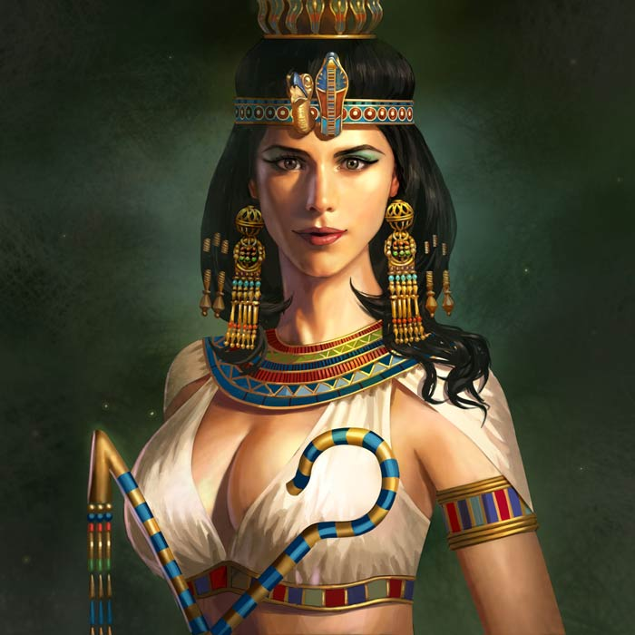

Nefertiti
Aspasia
Enheduanna
Cleopatra
Hipatia
Papisa Juana
De todas las mujeres de la historia escoger algunas y tener el atrevimiento de decir que son las más importantes puede parecer un despropósito. Pero no deja de ser un ejercicio valioso y agradable destacar algunas mujeres que han marcado nuestra historia y a las que debemos dar gracias del desarrollo del papel de la mujer en la actualidad.
Nefertiti. Iniciamos este listado de mujeres importantes con la reina del Antiguo Egipto. Fue la primera mujer que participó en las ceremonias del Estado, como esposa de Akhenaton. Juntos establecieron un culto monoteísta al dios solar Atón, que se enfrentó a la multiplicidad de los dioses egipcios.
Leer másAspasia. Bella e inteligente hetaira. Ayudó a Pericles a construir una época dorada para Atenas, en la cual bajo su protección florecieron las artes las más altas expresiones de la cultura griega.
Leer másEnheduanna.Poetisa y escritora acadia, considerada la poeta más antigua conocida y una de las primeras mujeres en la historia cuyo nombre se conserva. Ostentó el importante cargo, político-religioso, de Suma Sacerdotisa.
Leer másCleopatra.Hablaba varios idiomas y tenía gran conocimiento en astronomía y política. Conquistó a dos de los más grandes emperadores romanos: César y Marco Antonio, y mantuvo el poderío de Egipto a despecho de Roma.
Leer más
Hipatia.Maestra de prestigio en la escuela neoplatónica y realizó importantes contribuciones a la ciencia en los campos de las matemáticas y la astronomía. Su brutal asesinato escenifica el paso del razonamiento clásico al oscurantismo medieval.
Leer más
Papisa Juana. Pudo aprender griego, lo cual le permitía leer la Biblia, que por aquella época estaba traducida a muy pocos idiomas. También sabía de medicina, algo extraordinario para su época. Por reputación de erudita, fue presentada al papa León IV y enseguida se convirtió en su secretaria para los asuntos internacionales
Leer másNeferneferuatón Nefertiti (c. 1370 a. C.-c. 1331 a. C.) fue una reina de la dinastía XVIII de Egipto, la primera gran esposa real de Akenatón.
Algunos egiptólogos creen que ella fue la persona que reinó con el nombre de Semenejkara, que se asociara primero y sucediera brevemente después a Ajenatón (Akenatón) tras su muerte.
Aspasia aparece en las obras filosóficas de Platón, Jenofonte, Esquines socrático y Antístenes. Algunos estudiosos argumentan que Platón se vio impresionado por su inteligencia y que basó en ella el personaje Diotima de su obra El Simposio, si bien por el contrario otros afirman que Diotima podría ser un personaje histórico distinto que habría existido en la realidad.4243 Según Charles Kahn, profesor de Filosofía en la Universidad de Pensilvania, Diotima es en muchos aspectos la respuesta de Platón a la Aspasia de Esquines.
Es la primera mujer de la historia que se conoce que detentó el título de "Sacerdotisa En", un papel de gran importancia política que a menudo llevaron las hijas de la familia real. Escribió los primeros textos que se pueden atribuir a la historia de la literatura de autor. Es también la única mujer entre los grandes autores de la literatura mesopotámica. Sus temas son religiosos: himnos al dios Nannar y a su templo de Ur, y también a la diosa Inanna, protectora de la dinastía de Acad.
Se convirtió en reina de Egipto después de la muerte de su padre, Ptolomeo XII, en el año 51 a.C. y Hollywood suele retratarla como una glamorosa femme fatale.
Hipatia también llevó a cabo un análisis matemático de los movimientos de los astros descritos por Tolomeo en Las Tablas o Canón Astronómico. Se desconoce si formaban parte del libro III o si constituían una obra original.
A partir de las cartas de Sinesio podemos situar a Hipatia dentro de la escuela neoplatónica cuyas ideas parten de los pitagóricos. Una sociedad científica que basaba su sistema de pensamiento en la contemplación y el descubrimiento del cosmos, palabra que crearon ellos mismos, como un universo ordenado por unas leyes cognoscibles.

En síntesis, los relatos sobre la papisa sostienen que Juana, nacida en el 822 en Ingelheim am Rhein, cerca de Maguncia, era hija de un monje. Según algunos cronistas tardíos, su padre, Gerbert, formaba parte de los predicadores llegados del país de los anglos para difundir el Evangelio entre los sajones.
Puesto que solo la carrera eclesiástica permitía continuar unos estudios sólidos, Juana entró en la religión como monje copista, bajo el nombre masculino de Johannes Anglicus (Juan el Inglés), según Martín el Polaco.